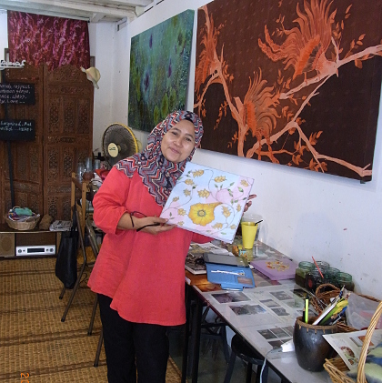
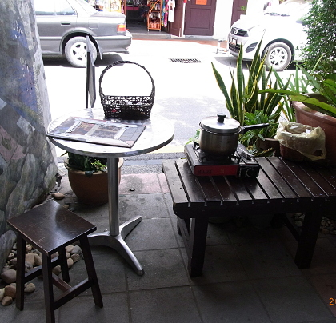
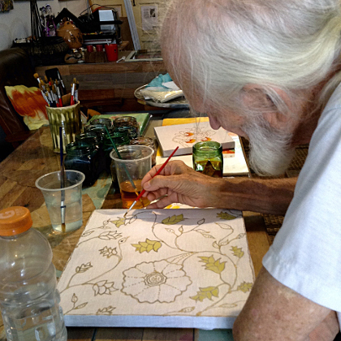

-------------------------------------------
On Acheh Street in George Town, close to the Cannon Hole wrought iron artwork, are two batik stores. Actually one of them is not a store, but the batik workshop and classroom of Rozana Mohamed. Perfect -- the exact activity that was dancing around in my mind. The shop next door is run by her daughter and sells a variety of batik clothing and artwork.
-------------------------------------------
| The starting point for making a batik painting is drawing a sketch on a piece of paper. Looking through many folders, two templates were located that could be joined and modified for a unique design. This was accomplished with cellophane tape and a soft pencil.
Next, white cotton fabric was stretched and stapled over a crude, but sturdy picture frame. Now the sketch could be held against the back of the fabric with a small pillow, permitting the outline of the sketch to be lightly traced onto the fabric with a soft pencil. We are now done with the sketch. Rozana |
 |
| The framed fabric is now ready for waxing. Special waxing pens called tjantings are filled with hot wax for the artist to use. At first the wax is hot and flows easily, so thicker, long lines in the pattern are first waxed. After 10 to 15 seconds, finer lines and dots are waxed for another 10 seconds until the remaining wax in the pen is too cold to penetrate the cloth. Emptying and refilling the tjanting only takes a few seconds, and the process is repeated until all lines of the pattern have been waxed. This is checked by looking to make sure wax has always penetrated through to the back side. Waxing station |
 |
| Now that the waxing is complete, painting with batik dyes can commence. Tools of the trade include a selection of fine brushes, small reservoirs for mixing colors, rinse water, and of course a selection of dyes for the colors in your artwork. If one starts with lighter colors, mistakes can be covered with darker colors. Dip the end of the brush into selected reservoir, then touch the appropriate place of the fabric. Color will spread out and stop at the wax lines. Work a few patches close together, then modify the color by thinning with water, or possibly even darkening along select edges. This is where the seasoned batik artist will make a profound difference.
Painting |
 |
Have a nice day!

Special Topics:
| |||||